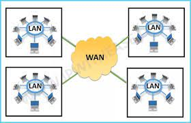
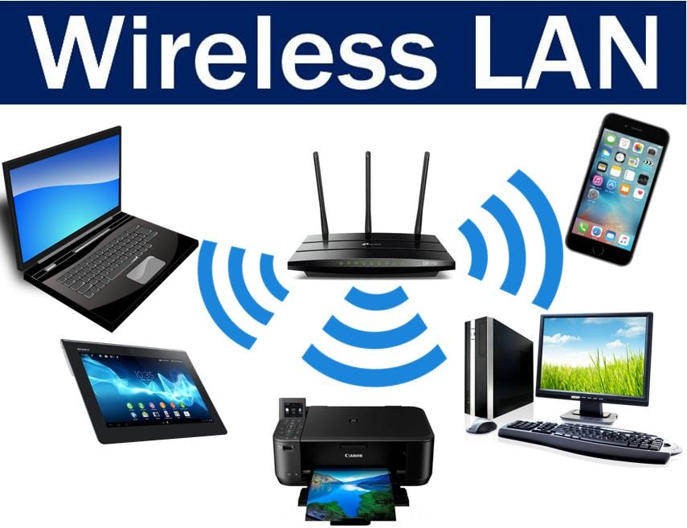

Un réseau local, en anglais Local Area Network ou LAN, est un réseau informatique où les terminaux qui y participent (ordinateurs, etc.) s'envoient des trames au niveau de la couche de liaison sans utiliser l’accès à internet (pour communiqur il n'ont besoin que de switchs et pas forcément de routeur).
On définit aussi le réseau local par le domaine de diffusion, c'est-à-dire l'ensemble des stations qui reçoivent une même trame de diffusion (en anglais broadcast frame). Au niveau de l'adressage IP, un réseau local correspond généralement à un sous-réseau IP (même préfixe d'adresse IP), cependant un seul lan peut être subdiviser en plusieurs sous réseaux.
On interconnecte les réseaux locaux au moyen de routeurs.Une autre approche consiste à définir le réseau local par sa taille physique. C'est généralement un réseau à une échelle géographique relativement restreinte, par exemple une salle informatique, une habitation particulière, un bâtiment ou un site d'entreprise.
En tant qu'administrarteur réseau, il sera notre centre d'activités.
Dans le cas d'un réseau d'entreprise, on utilise aussi le sigle RLE pour réseau local d'entreprise
Dans la page réseau de ce site, nous avons vu la définition du LAN et celle du WAN donc de façon simple et précise, on peut dire que le LAN est contenu dans le WAN qui est par conséquent plus grand, Mais cela ne signifie pas que les machines d'un lan peuvent directement communiquer avec les autres lans contenus dans le wan. Pour cela, il faut quelque procédure à respecter. D'abord, il faut forcément disposr d'un routeur car c'est elle qui donne la possibilité de faire circuler les messages entre sous réseaux différents, aussi avoir une adresse publique (souvent celle du routeur) pour assurer le voyage des paquets.
La qualité d'un réseau local est apprécié à travers un certains nombres de critéres. On peut en citer les inconturnables:
- la topologie du réseau
- la vitesse
- le coût
- la sécurité
- la disponibilité
- l'évolutivité
- la fiabilité
aussi bien celle physique que logique pour comprendre le fonctionnement du réseau
c'est la mesure du débit et de la bande passante
il s'agit de la somme nécessaire pour l'achat,l'instaallation et la maintenance
elle indique la façon dont le réseau est prtégée
elle indique le temps durant laquelle le réseau est disponible
c'est le fait de mettre en place le réseau avec des prévisions sur de futures équipements à ajouter pour faciliter leur intégration
il s'agit de savoir la tolérence aux pannes des équipements
le réseau local peut être retrouve sous différentes formes selon sa conception et son mode de connexion. Princpalement, on peut en citer trois:
- LES VLAN
Un VLAN est un sous-réseau logique de périphériques dans un domaine de diffusion, partitionné par des commutateurs réseau et/ou un logiciel de gestion de réseau, qui peut agir en propre comme un réseau local LAN distinct. Ils permettent de :
- Séparer les flux
- Segmentation : réduire la taille d'un domaine de collision
- Sécurité : permet de créer un ensemble logique isolé pour améliorer la sécurité. Le seul moyen pour communiquer entre des machines appartenant à des VLAN différents est alors de passer par un routeur
- Optimisation de la bande passante
- LE WLAN
Un réseau sans fil est un réseau informatique numérique qui connecte différents postes ou systèmes entre eux par ondes radio. Il peut être associé à un réseau de télécommunications pour réaliser des interconnexions à distance entre nœuds. La norme la plus utilisée actuellement pour les réseaux sans fil est la norme IEEE 802.11, plus connue sous le nom de Wi-Fi. Le rayonnement géographique des ondes est relativement limité étant donné la faible puissance d’émission des solutions matérielles actuelles. Pour cette raison, les réseaux sans fil se sont avant tout développés comme réseaux internes, propres à un bâtiment, soit comme réseau d’entreprise, soit comme réseau domestique.

Les réseaux sans fil constituent une alternative aux réseaux câblés. Leur compatibilité avec les réseaux câblés permet également de les y ajouter comme extensions.
Lorsque vous disposez de plusieurs ordinateurs, il peut être pratique de les connecter ensemble afin de créer un réseau local (en anglais LAN, abréviation de Local Area Network). La mise en place d'un tel réseau est très peu onéreuse, contrairement à ce que l'on pourrait croire. Voici quelques avantages que pourra vous apporter la mise en place d'un réseau local :
- Transfert de fichiers
- Partage de ressources (partage de la connexion à internet, partage d'imprimante, disques partagés, etc.)
- Mobilité (dans le cas d'un réseau sans fil)
- Discussion (essentiellement lorsque les ordinateurs sont distants)
- Jeu en réseau
Cependant, si vous désirez connecter uniquement deux ordinateurs, il est possible de se passer de switch, en les reliant directement avec un câble RJ45 croisé.
Voyons de plus prés les deux composants essentiels du réeau.
- materiel
Ils forment l'architecture physique qui est comme on l'a dit l'agencement des différents équipements et les types de support utilisé. Pour approfondir votre connaissance des matériels, se reférer à la page sur les matériels.
- adresse
Au delà des supports de communication, les équipements ont forcément besoin d'adresses pour puvoie échanger, elles constituent leur carte d'identité grâce à laquelle ont peu les reconnaitre. Il en existe deux grandes familles.
- Adresse MAC
Une adresse MAC (de l'anglais Media Access Control1), parfois nommée adresse physique2, est un identifiant physique stocké dans une carte réseau ou une interface réseau similaire. Elle est unique au monde. Toutes les cartes réseau ont une adresse MAC, même celles contenues dans les PC et autres appareils connectés (tablette tactile, smartphone, consoles de jeux, réfrigérateurs, montres, etc.). Une adresse MAC-48 est constituée de 48 bits (6 octets) et est généralement représentée sous la forme hexadécimale en séparant les octets par un double point. Par exemple 5E:FF:56:A2:AF:15.
Ces 48 bits sont répartis de la façon suivante :- 1 bit I/G : indique si l'adresse est individuelle, auquel cas le bit sera à 0 (pour une machine unique, unicast) ou de groupe (multicast ou broadcast), en passant le bit à 1 ;
- 1 bit U/L : 0 indique si l'adresse est universelle (conforme au format de l'IEEE) ou locale, 1 pour une adresse administrée localement ;
- 22 bits réservés : tous les bits sont à zéro pour une adresse locale, sinon ils contiennent l'adresse du constructeur ;
- 24 bits : adresse unique (pour différencier les différentes cartes réseaux d'un même constructeur).
Les concepteurs d'Ethernet ayant utilisé un adressage de 48 bits, il existe potentiellement 248 (environ 281 000 milliards) d'adresses MAC possibles. L'IEEE donne des préfixes de 24 bits (appelés Organizationally Unique Identifier - OUI) aux fabricants, ce qui offre 224 (environ 16 millions) d'adresses MAC disponibles par préfixe. Le changement d’une adresse MAC peut se faire au niveau logiciel, de manière temporaire avec une commande (ifconfig sous Linux par exemple) ou persistant en modifiant un fichier de configuration (la base de registre sous Windows par exemple). - Adresse IP v4
IPv4 (Internet Protocol version 4) est la première version d'Internet Protocol (IP) à avoir été largement déployée, et qui forme encore en 2023 la base de la majorité des communications sur Internet, par rapport à l'IPv6. Elle est décrite dans la RFC 7911 de septembre 1981, remplaçant la RFC 7602, définie en janvier 1980. Chaque interface d'un hôte IPv4 se voit attribuer une ou plusieurs adresses IP codées sur 32 bits (8 octets). Au maximum 4 294 967 296, soit 232 adresses peuvent donc être attribuées simultanément en théorie (en pratique, un certain nombre ne sont pas utilisables).
Une adresse IPv4 est représentée sous la forme de quatre nombres entiers séparés par des points comme 193.43.55.67. Chacun des nombres représente un octet. La plage d'attribution s'étend de 0.0.0.0 à 255.255.255.255, sachant qu'il existe des contraintes empêchant l'utilisation de certaines adresses (réservée, masque, broadcast, etc.). Elle est constituée de deux parties: le net id qui détermine la partie réseau et le host id qui détermine la partie cliente. Il existe cinq classes d'adresses IP. Chaque classe est identifiée par une lettre allant de A à E. Ces différentes classes ont chacune leurs spécificités quant à la répartition du nombre d'octets servant à identifier le réseau ou les ordinateurs connectés à ce réseau :- Une adresse IP de classe A dispose d'une partie net id comportant uniquement un seul octet.
- Une adresse IP de classe B dispose d'une partie net id comportant deux octets.
- Une adresse IP de classe C dispose d'une partie net id comportant trois octets.
- Les adresses IP de classes D et E correspondent à des adresses IP particulières.
Classe A
Une adresse IP de classe A dispose d'un seul octet pour identifier le réseau et de trois octets pour identifier les machines sur ce réseau. Un réseau de classe A peut comporter jusqu'à 23x8-2 postes, soit 224-2, soit 16 777 214 terminaux. Le premier octet d'une adresse IP de classe A commence toujours par le bit 0. La plage d'adresse en binaire s'étend de 0000 0000 à 0111 1111, soit de 0.0.0.0 à 127.255.255.255. Certaines valeurs étant réservées à des usages particuliers. Un exemple d'adresse IP de classe A est : 10.50.49.13.
Classe B
Une adresse IP de classe B dispose de deux octets pour identifier le réseau et de deux octets pour identifier les machines sur ce réseau. Un réseau de classe B peut comporter jusqu'à 22x8-2 postes, soit 216-2, soit 65 534 terminaux. Le premier octet d'une adresse IP de classe B commence toujours par la séquence de bits 10, il est donc compris entre 128 et 191. Un exemple d'adresse IP de classe B est : 172.16.1.23.
Classe C
Une adresse IP de classe C dispose de trois octets pour identifier le réseau et d'un seul octet pour identifier les machines sur ce réseau. Un réseau de classe C peut comporter jusqu'à 28-2 postes, soit 254 terminaux. Le premier octet d'une adresse IP de classe C commence toujours par la séquence de bits 110, il est donc compris entre 192 et 223. Un exemple d'adresse IP de classe C est : 192.168.1.34.
Classe D
Les adresses de classe D sont utilisées pour les communications multicast. Le premier octet d'une adresse IP de classe D commence toujours par la séquence de bits 1110, il est donc compris entre 224 et 239. Un exemple d'adresse IP de classe D est : 224.0.0.1.
Classe E
Les adresses de classe E sont réservées par IANA (Internet Assigned Numbers Authority) à un usage non déterminé. Les adresses de classe E commencent toujours par la séquence de bits 1111, ils débutent donc en 240.0.0.0 et se terminent en 255.255.255.255.
L'épuisement des adresses IPv4 a conduit au développement d'une nouvelle version d'IP, IPv6, et à la transition d'IPv4 vers IPv6 afin d'adopter cette nouvelle version. Le manque d'adresse IPv4 est dans un premier temps contourné grâce à l'utilisation de techniques de traduction d'adresses (NAT) ainsi que par l'adoption du système CIDR. Le nombre d'adresses IP Version 4 publiques est arrivé officiellement à saturation le 3 février 2011. - Adresse IP v6
IPv6 est l'aboutissement des travaux menés au sein de l'IETF au cours des années 1990 pour succéder à IPv4 et ses spécifications ont été finalisées dans la RFC 24601 en décembre 1998. IPv6 a été standardisé dans la RFC 82002 en juillet 2017. Grâce à des adresses de 128 bits au lieu de 32 bits, IPv6 dispose d'un espace d'adressage bien plus important qu'IPv4 (plus de 340 sextillions, ou 3,4x10^38, soit près de 7,9 x 1028 de fois plus que le précédent). Cette quantité d'adresses considérable permet une plus grande flexibilité dans l'attribution des adresses et une meilleure agrégation des routes dans la table de routage d'Internet. La traduction d'adresse, qui a été rendue populaire par le manque d'adresses IPv4, n'est plus nécessaire.IPv6 dispose également de mécanismes d'attribution automatique des adresses et facilite la renumérotation. La taille du sous-réseau, variable en IPv4, a été fixée à 64 bits en IPv6. Les mécanismes de sécurité comme IPsec font partie des spécifications de base du protocole. L'en-tête du paquet IPv6 a été simplifié et des types d'adresses locales facilitent l'interconnexion de réseaux privés. Le déploiement d'IPv6 sur Internet est compliqué en raison de l'incompatibilité des adresses IPv4 et IPv6. Les traducteurs d'adresses automatiques se heurtent à des problèmes pratiques importants (RFC 49663). Pendant une phase de transition où coexistent IPv6 et IPv4, les hôtes disposent d'une double pile, c'est-à-dire qu'ils disposent à la fois d'adresses IPv6 et IPv4, et des tunnels permettent de traverser les groupes de routeurs qui ne prennent pas encore en charge IPv6.
IPv6 améliore aussi certains aspects du fonctionnement d'IP, à la lumière de l'expérience acquise. Les spécifications principales d'IPv6 sont publiées en 1995 par l'IETF. Parmi les nouveautés, on peut citer :- des mécanismes de configuration et de renumérotation automatique
- IPsec, QoS et le multicast font partie de la spécification d'IPv6, au lieu d'être des ajouts ultérieurs comme en IPv4
- la simplification des en-têtes de paquets, qui facilite notamment le routage
- l'augmentation de 232 (soit environ 4,3 x 10^9) à 2^128 (soit environ 3,4 x 1038) du nombre d'adresses disponibles. Pour épuiser la totalité de ce stock d'adresses, il faudrait placer 667 millions de milliards d'appareils connectés sur chaque millimètre carré de la surface concrète de la Terre. En 2025, le nombre d'appareils connectés à Internet serait d'environ 75 milliards
2001:0db8:0000:85a3:0000:0000:ac1f:8001.
- Adresse MAC
Nous concédons que la conception d’une architecture réseau est un processus complexe. Néanmoins, une conception appropriée ne doit pas reposer uniquement sur les besoins fonctionnels. Elle doit également tenir compte des considérations de sécurité pour se prémunir de vulnérabilités critiques pouvant compromettre l’ensemble du système d’information. Il est donc nécessaire d’inclure les contraintes et les exigences de sécurité dès la phase de conception du réseau qui doivent assurer les objectifs de :
- Confidentialité, afin de s’assurer que les personnes ou les systèmes autorisés aient « UNIQUEMENT » accès aux ressources et données auxquelles ils ont droit,
- Intégrité, pour assurer que les ressources, données et informations ne soient pas, altérées, volées ou détruites par des utilisateurs ou des ressources non autorisés,
- Disponibilité, afin d’assurer un fonctionnement sans failles, et garantir l’accès aux services et ressources sans interruption,
- Traçabilité, afin de s’assurer que toute modification et changement dans le système sont surveillés et contrôlés.